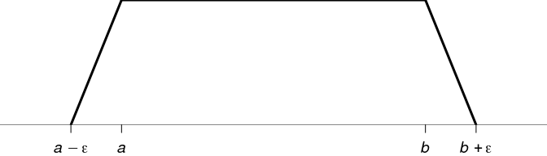

The conditional law as a random probability
Let \((\Omega, \mathfrak{A}, \mathbb{P})\) be a probability space, \(E\) a Polish space, and \(X\) an \(E\)-valued random variable. Denote by \(\mathcal{B}_E\) the Borel \(\sigma\)-field on \(E\). It is well-known that the law of \(X\) can be disintegrated over any \(\sigma\)-field \(\mathfrak{B}\subset\mathfrak{A}\). That means that there exists a probability kernel \(K\colon\Omega\times\mathcal{B}_E \to [0,1]\) from \(\Omega\) to \(E\) such that for every suitable function \(f\colon E \to\mathbb{R}\), \[ \mathbb{E}\bigl[f(X)\bigr] = \int_\Omega K_\omega(f) \mathrm{d}\mathbb{P}(\omega) \] where we denote by \(K_\omega\) the probability \(A\mapsto K(\omega,A)\) and we set \(\mu(f) = \int f \mathrm{d}\mu\) for a probability \(\mu\). The map \(\omega\mapsto K_\omega\) is called the conditional law of \(X\) given \(\mathfrak{B}\), and is denoted by \(\mathcal{L}(X\mid\mathfrak{B})\).
Recall that a probability kernel from a probability space \(\Omega\) to a measurable space \((E,\mathcal{B})\) is an application \(K\colon\Omega\times\mathcal{B} \to [0,1]\) such that
(i) for fixed \(\omega\in\Omega\), the map \(A \mapsto K(\omega,A)\) is a probability on \((E,\mathcal{B})\);
(ii) for fixed \(A\in\mathcal{B}\), the map \(\omega \mapsto K(\omega,A)\) is measurable.
It is less known that there exists a Polish topology on the set \(\Pr(E)\) of probabilities on \(E\) such that the conditional law \(\mathcal{L}(X\mid\mathfrak{B})\) is a \(\Pr(E)\)-valued random variable.
I am unable to find a self-contained reference for this result. I aim to prove it in these notes, in a self-contained way.
Polish spaces
A topological space \(E\) is said to be Lindelöf if there is a countable subcover of every open cover of \(E\). It is said to be second-countable when it has a countable basis.
Theorem. Every second-countable topological space is Lindelöf.
Proof. Let \(E\) be a second-countable topological space. Take a countable basis \({\{O_n\}}_{n \in \mathbb{N}}\) of the topology on \(E\). Let \(\mathcal{C}={\{C_i\}}_{i \in I}\) be an open cover of \(E\). For every \(x \in E\), take \(i(x) \in I\) such that \(x \in C_{i(x)}\), and let \(n(x) \in \mathbb{N}\) such that \(x \in O_{n(x)} \subset C_{i(x)}\). Then \({\{O_{n(x)}\}}_{x \in X}\) is a countable open cover of \(E\). For every \(\ell \in n(E) \subset \mathbb{N}\), the set \(\{j \in I \mid O_\ell \subset C_j\}\) is non-empty, therefore one can select \(j(\ell) \in I\) such that \(O_\ell \subset C_{j(\ell)}\) by using the axiom of countable choice. The set \({\{C_{j(\ell)}\}}_{\ell \in n(E)}\) is a countable subcover of \(\mathcal{C}\). □
Theorem. For a metrizable space, the notions of separability, second-countable and Lindelöf are equivalent.
Proof. Let \(E\) be a metric space. Denote by \(B_r(x)\) the open ball of radius \(r\) centered at \(x\).
Assume \(E\) is separable. Let \({(x_n)}_{n\geqslant 1}\) be a dense sequence of \(E\). Then \(\bigl\{B_r(x_n) \mid r \in \mathbb{Q}, n\geqslant 1\bigr\}\) is a countable basis of \(E\), hence \(E\) is second-countable.
By the previous theorem, the second-countable property implies the Lindelöf property. Now assume \(E\) is Lindelöf. Consider the open cover \(\bigl\{B_\epsilon(x)\bigr\}_{x \in E}\) for a given \(\epsilon>0\). By the Lindelöf property, there exists a countable subcover \(\bigl\{B_\epsilon(x_{\epsilon,k})\bigr\}_{k \in \mathbb{N}}\). Then \(\bigcup_{n\geqslant 1} {\bigl\{x_{1/n,k}\bigr\}}_{k \in \mathbb{N}}\) is dense in \(E\), thereby showing that \(E\) is separable. □
Corollary. A subspace of a metrizable separable space is itself separable.
Proof. It is clear that a subspace of a second-countable space is itself second-countable. Therefore the result follows from the previous theorem. □
Given a metric space \((E,d)\), a non-empty set \(A \subset E\) and \(\epsilon>0\), we define the set \[ A^\epsilon = \bigl\{x \in E \mid d(x,A) < \epsilon\bigr\}. \] It is well-known that \(x \mapsto d(x,A)\) is continuous. This straigthforwardly results from the inequality \(\bigl|d(x,A) - d(y,A)\bigr| \leqslant d(x,y)\) (see [2]). Hence \(A^\epsilon\) is open. It is also well-known that \(d(x,A) = 0\) if and only if \(x \in \overline{A}\).
Proposition. An open subset of a Polish space is Polish.
Proof. Let \(E\) be a Polish metric space, and \(A \subset E\) be open. Then \(A\) is separable by the previous corollary. Assume \(A \neq E\) and let \(d\) be a compatible metric on \(E\) under which \(E\) is complete. For \(x,y\in E\), define \[ d'(x,y) = d(x,y) + \left|\frac{1}{d(x,A^c)}-\frac{1}{d(y,A^c)}\right|. \] It is easy to check that \(d'\) is a metric on \(A\). Using the continuity of \(x \mapsto d(x,A^c)\), it is easy to see that convergence for \(d\) is equivalent to convergence for \(d'\).
It is also clear that a \(d'\)-Cauchy sequence \((u_n)\) in \(A\) is a \(d\)-Cauchy sequence. Let \(u_\infty\) be the limit of \((u_n)\). Then \(u_\infty \in A\), otherwise \(d(u_n, A^c) \to 0\) and \(d'(u_n,u_m) \to \infty\) as \(m,n \to \infty\) □
More generally, a subset of a Polish space is a Polish space if and only if it is a \(G_\delta\) set - see [6].
A topological space is said to be strongly Lindelöf if every open set is Lindelöf.
Corollary. A Polish space is strongly Lindelöf.
Proof. A Polish space is metrizable and separable, therefore it is Lindelöf by the second theorem. Since an open subset of a Polish space is Polish, we see that a Polish space is strongly Lindelöf. □
Space of probability measures
For a topological space \(E\), we denote by \(\mathcal{B}_E\) the Borel \(\sigma\)-field on \(E\), by \(C_b(E)\) the space of real-valued bounded continuous functions on \(E\) and by \(\Pr(E)\) the topological space of probabilities on \(E\) equipped with the narrow topology.
The canonical basis of neighborhoods at \(\mu \in \Pr(E)\) is the family of open sets \[ \Bigl\{\nu\in\Pr(E) \mid \bigl|\nu(f_i)-\mu(f_i)\bigl| < \epsilon, i\in [\![1,k]\!]\Bigr\} \] for \(\epsilon>0\), \(k \geqslant 1\) and \(f_i \in C_b(E)\).
In the last section of these notes, we will use the fact that a net \((\mu_\lambda)\) in \(\Pr(E)\) converges to \(\mu_\infty \in \Pr(E)\) if and only if \(\mu_\lambda(f) \to \mu_\infty(f)\) for every \(f \in C_b(E)\).
Lemma. Let \(\mu\in\Pr(E)\), \(f \in C_b(E)\) and \(\epsilon > 0\). There exist an integer \(k \geqslant 1\), a number \(\eta > 0\) and some closed sets \(F_1 \subset E, \ldots, F_k \subset E\) such that the set \[ \Bigl\{\nu \mid \bigl|\nu(f)-\mu(f)\bigl| < \epsilon\Bigr\} \] contains the set \[ \bigl\{\nu \in \Pr(E) \mid \nu(F_i)<\mu(F_i)+\eta, i\in [\![1,k]\!]\bigr\}. \]
Proof. Using a linear transformation, one can write \[ \Bigl\{\nu \mid \bigl|\nu(f)-\mu(f)\bigl| < \epsilon\Bigr\} \] as \[ \Bigl\{\nu \mid \bigl|\nu(g)-\mu(g)\bigl| < \epsilon'\Bigr\} \] where \(g \in C_b(E)\) is such that \(0 < g(x) < 1\) for all \(x\in E\) and \(\epsilon' > 0\). Take an integer \(k > \frac{2}{\epsilon'}\) and take the closed sets \(F_i = \bigl\{x \in E \mid g(x) \geqslant \frac{i-1}{k}\bigr\}\) for \(i\in [\![1,k]\!]\) and \(F_{k+1} = \varnothing\).
Define the intervals \(J_i = \bigl[\frac{i-1}{k}, \frac{i}{k} \bigr[\). For every \(P\in\Pr(E)\), one has \[ \sum_{i=1}^k \frac{i-1}{k}P\bigl(g^{-1}(J_i)\bigr) \leqslant P(g) \leqslant \sum_{i=1}^k \frac{i}{k}P\bigl(g^{-1}(J_i)\bigr). \] The sum on the right is \[ \sum_{i=1}^k \frac{i}{k}\bigl(P(F_i) - P(F_{i+1})\bigr) = \frac{1}{k} + \frac{1}{k}\sum_{i=2}^kP(F_i) \] and the sum on the left is \(\frac{1}{k}\sum_{i=2}^kP(F_i)\). Therefore \(\nu(g) < \frac{\epsilon'}{2} + \frac{1}{k}\sum_{i=2}^k\nu(F_i)\) and \(\frac{1}{k}\sum_{i=2}^k\mu(F_i) \leqslant \mu(g)\). Thus, if \(\nu(F_i)<\mu(F_i)+\eta\), one has \[ \nu(g) < \frac{\epsilon'}{2} + \mu(g) + \eta \] and then \(\nu(g) < \mu(g) + \epsilon'\) if we take \(\eta = \frac{\epsilon'}{2}\). Applying the same mathematics with \(1-g\) instead of \(g\), we finally get \(\bigl|\nu(g)-\mu(g)\bigl| < \epsilon'\). □
The following proposition follows from this lemma; it will be used in the last section.
Proposition. Let \(\mu\in\Pr(E)\) and \((\mu_n)\) be a sequence in \(\Pr(E)\). If \(\limsup \mu_n(F) \leqslant \mu(F)\) for all closed sets \(F\subset E\), then \((\mu_n)\) converges to \(\mu\).
Proof. Let \(V\) be a neighborhood of \(\mu\). By the previous lemma, there exist an integer \(k \geqslant 1\), a number \(\epsilon > 0\) and some closed sets \(F_1 \subset E, \ldots, F_k \subset E\) such that \[ U := \bigl\{\nu \in \Pr(E) \mid \nu(F_i)<\mu(F_i)+\epsilon, i\in [\![1,k]\!]\bigr\} \subset V. \] One has \(\limsup \mu_n(F_i) \leqslant \mu(F_i)\) for every \(i\in [\![1,k]\!]\). Therefore, there is an integer \(N_i\) such that \(\mu_n(F_i) < \mu(F_i) + \epsilon\) when \(n \geqslant N_i\). Hence, \(\mu_n \in U\) for \(n\geqslant\max\{N_i\}\). Since \(U\subset V\), one gets \(\mu_n \to \mu\) in \(\Pr(E)\). □
Theorem. The probabilities on \(E\) with finite support form a dense subset of \(\Pr(E)\).
Proof. Let \(\mu \in \Pr(E)\) and \[
V =
\Bigl\{\nu \in\Pr(E) \mid \bigl|\nu(f_i)-\mu(f_i)\bigl| < \epsilon,
i\in [\![1,k]\!]\Bigr\}
\] be an open set in the canonical basis of neighborhoods of \(\mu\). By the previous lemma, \(V\) contains a set \[
U = \bigl\{\nu \in \Pr(E) \mid
\nu(F_i)<\mu(F_i)+\epsilon', i\in [\![1,k']\!]\bigr\}
\] with \(k'\geqslant 1\), \(\epsilon'>0\), and \(F_i\subset E\) closed. The \(F_i\) generate a finite partition
\(\mathcal{P} = \{B_1, \ldots, B_J\}\) with \(B_j \neq \varnothing\) closed. For each \(B_j \in \mathcal{P}\), we pick a point
\(b_j \in B_j\). The probability \(\sum_{j=1}^J\mu(B_j)\delta_{b_j}\) belongs to \(U\). That shows the result. □
Theorem. If \(E\) is separable, then so is \(\Pr(E)\).
Proof. Let \(D \subset E\) be a countable dense subset of \(E\). We are going to show that the set of probability measures with finite support contained in \(D\) and which have a rational mass at each point of their support, is dense in \(\Pr(E)\). Since this set is countable, this will prove the proposition.
By the preceding theorem, we know that the probabilities with finite support form a dense subset of \(\Pr(E)\). Let \(\mu = \sum_{j=1}^J p_j \delta_{x_j}\) be such a probability. Take an open neighborhood of \(\mu\) \[ \mathcal{V} = \Bigl\{\nu \in\Pr(E) \mid \bigl|\nu(f_i)-\mu(f_i)\bigl| < \epsilon, i\in [\![1,k]\!]\Bigr\}, \] with \(k \geqslant 1\), \(\epsilon>0\) and \(f_i \in C_b(E)\). Note that \(\mu(f_i) = \sum_{j=1}^J p_j f_i(x_j)\).
Let \(K = \max\bigl\{{\Vert f_i \Vert}_\infty\bigr\}\). Let \(q_j \in \mathbb{Q}\cap [0,1]\), \(j \in [\![1,J]\!]\), such that \(\sum_{j=1}^J q_j = 1\) and \(|q_j - p_j| < \frac{\epsilon}{2JK}\). Let \(y_{j} \in D\) such that \(\bigl|f_i(y_{j}) - f_i(x_j)\bigr| < \frac{\epsilon}{2}\) for every \(j \in [\![1,J]\!]\).
We set \(\nu = \sum_{j=1}^J q_j \delta_{y_{j}}\), so that one has \(\nu(f_i) = \sum_{j=1}^J q_j f_i(y_{j})\), and then \[ \bigl|\nu(f_i)-\mu(f_i)\bigr| \leqslant \sum_{j=1}^J \bigl|q_j f_i(y_{j}) - p_j f_i(x_j)\bigr|. \] Let us bound from above each term of the sum: \[ \begin{align} & \bigl|q_j f_i(y_{j}) - p_j f_i(x_j)\bigr| \\ & \quad \leqslant \bigl|q_j f_i(y_{j}) - p_j f_i(y_{j})\bigr| + \bigl|p_j f_i(y_{j}) - p_j f_i(x_j)\bigr| \\ & \quad \leqslant |q_j - p_j| {\Vert f_i \Vert}_\infty + p_j \bigl|f_i(y_{j}) - f_i(x_j)\bigr| \\ & \quad < \frac{\epsilon}{2J} + p_j \frac{\epsilon}{2}. \end{align} \] By summing, one gets \(\bigl|\nu(f_i)-\mu(f_i)\bigr| < \epsilon\), hence \(\nu \in \mathcal{V}\). □
Theorem. Assume \(E\) is metric and denote by \(d\) the metric on \(E\). Let \(F \subset E\) be closed and \(\epsilon>0\). Then there is a function \(f\in C_b(E)\) such that \(f(x)=1\) for \(x\in F\), \(f(x)=0\) if \(d(x,F)\geqslant\epsilon\) and \(0\leqslant f(x)\leqslant 1\) for all \(x \in E\). This function \(f\) may be taken to be uniformly continuous.
Proof. Define the continuous function \(\phi\colon\mathbb{R}\to [0,1]\) by \[ \phi(t) = \begin{cases} 1 & \text{if } t \leqslant 0 \\ 1-t & \text{if } 0 \leqslant t \leqslant 1 \\ 0 & \text{if } t \geqslant 1 \end{cases}. \] Then define \[ f(x) = \phi\left(\frac{1}{\epsilon}d(x,F)\right). \] This function \(f\) has the required properties. Here is the graph of \(f\) for \(F = [a,b] \subset \mathbb{R}\):

□
Proposition (neighborhood bases of the narrow topology). If \(E\) is a metric space, then each of the three families of sets below form a neighborhood basis of the narrow topology at \(\mu \in \Pr(E)\).
(i) \(\bigl\{\nu \in \Pr(E) \mid \nu(F_i)<\mu(F_i)+\epsilon, i\in [\![1,k]\!]\bigr\}\), where \(k \geqslant 1\) is an integer, the \(F_i\) are closed in \(E\), and \(\epsilon > 0\).
(ii) \(\bigl\{\nu \in \Pr(E) \mid \nu(O_i)>\mu(O_i)-\epsilon, i\in [\![1,k]\!]\bigr\}\), where \(k \geqslant 1\) is an integer, the \(O_i\) are open in \(E\), and \(\epsilon > 0\).
(iii) \(\Bigl\{\nu \in \Pr(E) \mid \bigl|\nu(A_i)-\mu(A_i)\bigr|+\epsilon, i\in [\![1,k]\!]\Bigr\}\), where \(k \geqslant 1\) is an integer, the \(A_i\) are Borelian in \(E\) and satisfy \(\mu(\partial A_i)=0\), and \(\epsilon > 0\).
Proof. One obviously gets equality between the families (i) and (ii) with the help of the complementary operation. By the previous lemma, each neighborhood at \(\mu\) in the canonical basis contains a set in the family (ii). Let us show the converse. Denote by \(d\) the metric on \(E\) and for \(A \subset E\) and \(\eta > 0\), define \(A^\eta = \bigl\{x\in E \mid d(x,A) < \eta \bigr\}\). Choose \(\eta_i>0\) such that \(\mu(F_i^{\eta_i}) < \mu(F_i) + \frac{\epsilon}{2}\). Apply the previous theorem to get \(f_i\in C_b(E)\) with value \(1\) on \(F_i\), value \(0\) outside \(F_i^{\eta_i}\), and value everywhere contained in \([0,1]\). If \(\bigl|\nu(f_i)-\mu(f_i)\bigr| < \frac{\epsilon}{2}\), then \[ \nu(F_i) \leqslant \nu(f_i) < \mu(f_i) + \frac{\epsilon}{2} \leqslant \mu(F_i^{\eta_i}) + \frac{\epsilon_i}{2} < \mu(F_i) + \epsilon. \] Thus, each set in the canonical neighborhood at \(\mu\) is contained in a set of family (i).
It remains to treat the family (iii). If \(A\subset E\) is Borel and \(\mu(\partial A) = 0\), then for \(\nu\) in a set of family (i) we have \[ \nu(A) \leqslant \nu(\overline{A}) < \mu(\overline{A}) + \epsilon = \mu(A) + \epsilon \] and for \(\nu\) in a set of family (ii) we have \[ \nu(A) \geqslant \nu(A^\circ) > \mu(A^\circ) - \epsilon = \mu(A) - \epsilon. \] Since (i) is a neighborhood basis at \(\mu\), each set of family (iii) contains a set of family (i). On the other hand, if \(F \subset E\) is closed, then for any \(\epsilon>0\) there is \(\eta>0\) such that \(\mu(\partial F^\eta) = 0\) and \(\mu(F^\eta) < \mu(F) + \frac{\epsilon}{2}\). Indeed, firstly one can obviously take \(\lambda\) such that \(\mu(F^\lambda) < \mu(F) + \frac{\epsilon}{2}\). Since the \(\partial F^\eta\) for \(\eta \in ]0, \lambda[\) have empty intersection (since \(\partial F^\eta = \bigl\{x\in E \mid d(x,F) = \eta \bigr\}\)), there is \(\eta \in ]0, \lambda[\) such that \(\mu(\partial F^\eta) = 0\). Obviously \(\mu(F^\eta) \leqslant \mu(F^\lambda)\). The claim is proved. Now take \(\nu\) such that \(\bigl|\nu(F^\eta)-\mu(F^\eta)\bigr| < \frac{\epsilon}{2}\). Then \[ \nu(F) \leqslant \nu(F^\eta) < \mu(F^\eta) + \frac{\epsilon}{2} < \mu(F) + \epsilon. \] Thus each set of family (i) contains a set of family (iii). □
The following proposition will be used in the last section.
Proposition. Assume \(E\) is metric. Let \(\mu\in\Pr(E)\) and \((\mu_n)\) be a sequence in \(\Pr(E)\), such that \((\mu_n)\) converges to \(\mu\). Then \(\limsup \mu_n(F) \leqslant \mu(F)\) for all closed sets \(F\subset E\).
Proof. Suppose there exists a closed \(F\subset E\) such that \(\limsup \mu_n(F) > \mu(F)\). Let \(\epsilon>0\) such that \(\limsup \mu_n(F) > \mu(F)+\epsilon\). Then there are infinitely many \(n\) such that \(\mu_n(F) \geqslant \mu(F)+\epsilon\). The set \[ V = \bigl\{\nu \in \Pr(E) \mid \nu(F)<\mu(F)+\epsilon\bigr\} \] is a neighborhood of \(\mu\) by the previous proposition. But for every \(N \geq 0\), there exists \(n \geqslant N\) for which \(\mu_n\not\in V\). That shows that \((\mu_n)\) does not converge to \(\mu\). □
Lemma (regularity of probabilities on metric spaces) Assume \(E\) is metric. Then for every probability \(\mu\) on \(E\) and every Borel set \(A \subset E\), \[ \begin{align} \mu(A) & = \inf\bigl\{\mu(O) \mid O \text{ open}, O \supset A\bigr\} \\ & = \sup\bigl\{\mu(F) \mid F \text{ closed}, F \subset A\bigr\}. \end{align} \]
Proof. The first equality is obviously true for an open set \(A\). Let us show that the second equality is true for any open set \(A\). There exist some closed sets \(F_n \uparrow A\): take \(F_n = \bigl\{x \mid d(x,A^c) \geqslant \frac{1}{n} \bigr\}\). Since we have \(\mu(F_n) \uparrow \mu(A)\), it is easy to see that the second equality holds for \(A\). Let \(\mathcal{A}\) be the set of all Borel sets \(A\) fulfilling the stated property. To prove that the lemma is true, it remains to show that \(\mathcal{A}\) is a \(\sigma\)-algebra. Let us show this is the case. It is clear that \(\mathcal{A}\) is stable under complementation. It is easy to see that \(A \in \mathcal{A}\) if and only if for every \(\epsilon > 0\) there exist an open set \(O \supset A\) and a closed set \(F \subset A\) such that \(\mu(O\setminus F) < \epsilon\).
Let \((A_n)\) be a sequence in \(\mathcal{A}\). For every \(n\), let \(F_n \subset A_n \subset O_n\) with \(\mu(O_n \setminus F_n) \leqslant \epsilon/3^n\). Let \(n_0\) such that \[ \mu\bigl(\bigcup F_n \setminus \bigcup_{k=1}^{n_0} F_k \bigr) < \frac{\epsilon}{2}. \] Take \(O = \bigcup_n O_n\) and \(F = \bigcup_{k=1}^{n_0} F_k\). Then \(F \subset \bigcup_n A_n \subset O\) and since \(O \setminus \bigcup_n F_n \subset \bigcup (O_n\setminus F_n)\), \[ \mu(O\setminus F) \leqslant \mu(O \setminus \bigcup F_n) + \mu(\bigcup F_n \setminus F) < \sum \mu(O_n\setminus F_n) + \frac{\epsilon}{2} < \epsilon. \] □
Lemma. If the inequality \(\mu(A) \leqslant \nu(A^\epsilon) + \epsilon\) holds for \(A = E\setminus B^\epsilon\), then \(\nu(B) \leqslant \mu(B^\epsilon) + \epsilon\).
Proof. Note that the two inclusions \(A \subset E\setminus B^\epsilon\) and \(B \subset E\setminus A^\epsilon\) are equivalent because each one is equivalent to \(d(x,y) \geqslant \epsilon\) for all \(x\in A\) and \(y\in B\). Hence \[ \mu(B^\epsilon) = 1 - \mu(A) \geqslant 1 - \nu(A^\epsilon)-\epsilon = \nu(E\setminus A^\epsilon)-\epsilon \geqslant \nu(B) -\epsilon. \] □
We will not use equality \((2)\) of the following proposition.
Proposition and definition (Prohorov distance). Let \(E\) be a metric space. The Prohorov distance between \(\mu \in \Pr(E)\) and \(\nu \in \Pr(E)\) is defined by \[ d_P(\mu,\nu) = \inf\bigl\{\epsilon>0 \mid \forall A\in\mathcal{B}_E, \mu(A) \leqslant \nu(A^\epsilon) + \epsilon \,\text{ and }\, \nu(A) \leqslant \mu(A^\epsilon) + \epsilon\bigr\}. \] One has \[ \begin{align} d_P(\mu,\nu) & \overset{(1)}{=} \inf\bigl\{\epsilon>0 \mid \forall A\in\mathcal{B}_E, \mu(A) \leqslant \nu(A^\epsilon) + \epsilon\bigr\} \\ & \overset{(2)}{=} \inf\bigl\{\epsilon>0 \mid \forall \text{ closed } F\subset E, \mu(F) \leqslant \nu(F^\epsilon)+\epsilon\bigr\}. \end{align} \]
Proof. Let \(\epsilon>0\) such that \(\mu(A) \leqslant \nu(A^\epsilon) + \epsilon\) for all \(A\in\mathcal{B}_E\). Let \(B\in\mathcal{B}_E\). Then \(E\setminus B^\epsilon\in\mathcal{B}_E\) since \(B^\epsilon\) is open. Applying the previous lemma, we get \(\nu(B) \leqslant \mu(B^\epsilon) + \epsilon\). Thus the two inequalities in the definition of \(d_P(\mu,\nu)\) hold for all \(B\in\mathcal{B}_E\). Equality \((1)\) is proved.
Now we prove equality \((2)\). Let \(\epsilon>0\) such that \(\mu(F) \leqslant \nu(F^\epsilon)+\epsilon\) for all closed sets \(F \subset E\). We will first prove that \(\nu(F) \leqslant \mu(F^\epsilon)+\epsilon\) for all closed sets \(F \subset E\). Let \(H\subset E\) be closed and \(G = E\setminus H^\epsilon\). Then \(G\) is closed. Hence \(\nu(H) \leqslant \mu(H^\epsilon) + \epsilon\) by the previous lemma. Thus it suffices to prove that \(\epsilon>0\) satisfies \[ \mu(A) \leqslant \nu(A^\epsilon) + \epsilon \,\text{ and }\, \nu(A) \leqslant \mu(A^\epsilon) + \epsilon \] for all Borel \(A\) if and only if it satisfies these inequalities for all closed \(A\). Assume these inequalities hold for all closed \(A\). Let \(B\subset E\) be Borel. Take \(\eta>0\). By the lemma “regularity of probabilities on metric spaces”, there exists a closed \(C\subset B\) such that \(\mu(C) \geqslant \mu(B)-\delta\). Hence \[ \mu(B)-\delta \leqslant \mu(C) \leqslant \nu(C^\epsilon)+\epsilon \leqslant \nu(B^\epsilon)+\epsilon. \] Therefore \(\mu(B) \leqslant \nu(B^\epsilon)+\epsilon\) since \(\delta\) was arbitrary. The other inequality is similarly proved. □
Lemma. Let \(E\) be a metric space, and \(\mu\in\Pr(E)\). For every \(\eta>0\), one can cover \(E\) by open balls \(\{S_i\}\) satisfying \(\mu(\partial S_i)=0\) and \(\textrm{diam}(S_i) < \eta\) for all \(i\). If \(E\) is separable, one can cover \(E\) by countably many such balls.
Proof. Denote by \(S_\eta(x)\) the open sphere of radius \(\eta\) centered at \(x\), and by \(B_\eta(x)=\partial S_\eta(x) = \bigl\{y \mid d(x,y)=\eta\bigr\}\) the boundary of this sphere. One has \(S_\eta(x) = \bigcup_{0\leqslant\eta'<\eta}B_\eta(x)\). This is an uncountable disjoint union of Borel sets, and hence all but a countable number of them must have \(\mu\)-measure zero. Therefore every sphere \(S_\eta(x)\) contains a sphere \(S_{\eta'}(x)\), \(\eta'\leqslant\eta\) such that \(\mu\bigl(B_{\eta'}(x)\bigr)=0\). Picking such a sphere for every \(x\in E\), one gets the first claim of the lemma. If \(E\) is separable, one picks such a sphere for every \(x\) in a dense subset of \(E\). □
Theorem. The Prohorov distance defines a metric on \(\Pr(E)\). The topology it induces is finer than the narrow topology. These two topologies coincide when \(E\) is separable.
Proof. It is clear that \(d_P(\mu,\nu) = d_P(\nu,\mu) \geqslant 0\) and \(d_P(\mu,\mu)=0\). If \(A \subset E\) is closed then \(A^\epsilon \downarrow A\) as \(\epsilon \downarrow 0\) (it is easy to see that \(d(x,A)=0\) for every \(x \in \cap_{\epsilon>0} A^\epsilon\), and this is equivalent to \(x\in\overline{A}\)), hence \(\mu(A^\epsilon) \downarrow \mu(A)\). Therefore \(d_P(\mu,\nu) = 0\) implies \(\mu(A)=\nu(A)\) for all closed \(A\), and therefore \(\mu = \nu\). Now let us prove the triangle inequality. Let \(\mu_1,\mu_2,\mu_3\in\Pr(E)\). For any \(\epsilon>d_P(\mu_1,\mu_2)\) and \(\eta>d_P(\mu_2,\mu_3)\), we have \[ \mu_1(A) < \mu_2(A^\epsilon)+\epsilon, \quad \mu_2(A^\epsilon) < \mu_3(A^{\epsilon+\eta})+\eta \] for every Borel set \(A\subset E\). This implies \(\mu_1(A) < \mu_3(A^{\epsilon+\eta})+\epsilon+\eta\). Similarly, \(\mu_3(A) < \mu_1(A^{\epsilon+\eta})+\epsilon+\eta\). Therefore \(d_P(\mu_1,\mu_3) \leqslant \epsilon+\delta\). Letting \(\epsilon\to d_P(\mu_1,\mu_2)\) and \(\eta\to d_P(\mu_2,\mu_3)\), we get \(d_P(\mu_1,\mu_3) \leqslant d_P(\mu_1,\mu_2) + d_P(\mu_2,\mu_3)\).
Now let us show that the topology induced by \(d_P\) is finer than the narrow topology.
Let \(\mu\in\Pr(E)\), \(F\subset E\) closed and \(\epsilon>0\). Let \(\eta \in ]0,\epsilon[\) such that \(\mu(F^\eta)<\mu(F)+\epsilon\). If \(d_P(\mu,\nu)<\eta\), then \(\nu(F) <\mu(F^\eta)+\eta < \mu(F) + 2\epsilon\). Thus each set of the family (i) in proposition “neighborhood bases of the narrow topology” contains a \(d_P\)-ball. The separability assumption has not been used here.
Now we show the converse under the separability assumption on \(E\) . We will show that every open \(d_P\)-ball contains a set of the family (iii) in proposition “neighborhood bases of the narrow topology”. Take \(\eta \in ]0,\epsilon/2[\). Apply the previous lemma: cover \(E\) by open balls \({\{S_i\}}_{i \geqslant 1}\) satisfying \(\mu(\partial S_i)=0\) and \(\textrm{diam}(S_i) < \eta\) for all \(i\). Let \(A_1 = S_1\) and \(A_n = S_n\setminus\bigl(\bigcup_{m=1}^{n-1}S_m\bigr)\) for \(n \geqslant 2\). Take \(k\geqslant 1\) such that \(\mu\bigl(\bigcup_{i=1}^kA_i\bigr) > 1-\eta\). One has \(\bigcup_{i=1}^kA_i = \bigcup_{i=1}^kS_i\), therefore \(\mu\Bigl(\partial\bigl(\bigcup_{i=1}^kA_i\bigr)\Bigr) = 0\). Denote by \(\mathcal{A}\) the set of all Borel \(A\) that can be written as a union of sets from \(\{A_1, \ldots, A_k\}\). Let \(N\) be a neighborhood of \(\mu\) of type (iii) in proposition “neighborhood bases of the narrow topology”, described by \[
N = \Bigl\{\nu \in \Pr(E) \mid \forall A\in\mathcal{A},
\bigl|\mu(A)-\nu(A)\bigr|<\eta \Bigr\}.
\] For any Borel set \(B\subset E\), let \(A'\) be the union of sets in \(\{A_1, \ldots, A_k\}\) which intersect \(B\). Then \(\bigl|\mu(A')-\nu(A')\bigr|<\eta\) if \(\nu \in N\).
Let us check that \(A'\subset B^\eta\). If \(x \in A'\), then there is \(j\) such that \(x \in A_j\) and \(A_j\cap B \neq \varnothing\). Pick \(y \in A_j \cap B\). Then \(d(x,B) \leqslant d(x,y)\). Since \(\textrm{diam}(A_j)<\eta\), one has \(x \in B^\eta\).
One has \(B \subset A' \cup {\bigl(\bigcup_{i=1}^kA_i\bigr)}^c\). Thus \[ \mu(B) \leqslant \mu(A') + \mu\Bigl(\bigl(\bigcup_{i=1}^kA_i\bigr)^c\Bigr) \leqslant \nu(A') + 2\eta \leqslant \nu(B^\eta)+2\delta, \] hence \(d_P(\mu,\nu) \leqslant 2\delta < \epsilon\). That is, every open \(d_P\)-ball contains a set of type (iii) in proposition “neighborhood bases of the narrow topology”. □
We refer the reader to [3] for a proof of the following theorem. But we will give a proof of this theorem in the last section for a Lusin space \(E\), which is enough for our purpose (since a Polish space is Lusin).
Theorem (Prohorov). Let \(E\) be a metrizable space. If \(\Lambda \subset \Pr(E)\) is tight, then every sequence in \(\Lambda\) has a convergent subsequence.
Theorem. If \(E\) is Polish, the Prohorov metric is complete.
Proof. Let \((\mu_n)\) be a Cauchy sequence in \(\Pr(E)\) with respect to \(d_P\). Let \(\epsilon>0\) and \(k \geqslant 1\) be an integer. Pick \(n(k)\geqslant 1\) such that \(d_P(\mu_n,\mu_{n(k)}) < \epsilon 2^{-k}\) for \(n \geqslant n(k)\). Consider a complete metric on \(E\) compatible with the topology. Since \(E\) is separable, it can be covered by countably many open balls of diameter \(\epsilon 2^{-k}\). Let \(B_1^k, \ldots, B_{m(k)}^k\) be finitely many open balls of diameter \(\epsilon 2^{-k}\) satisfying \[ \mu_{n(k)}\left(\bigcup_{i=1}^{m(k)}B_i^k\right) > 1 - \frac{\epsilon}{2^k}. \] For each \(i \in [\![1,m(k)]\!]\), let \(A_i^k\) be the open ball concentric with \(B_i^k\) and with twice the radius. Since \[ {\left(\bigcup_{i=1}^{m(k)}B_i^k\right)}^{\!\!\frac{\epsilon}{2^k}} \subset \bigcup_{i=1}^{m(k)}A_i^k \] and \(d_P(\mu_n,\mu_{n(k)}) < \frac{\epsilon}{2^k}\) for \(n\geqslant n(k)\), \[ \mu_n\left(\bigcup_{i=1}^{m(k)}A_i^k\right) > 1 - \frac{2\epsilon}{2^k} \] for \(n\geqslant n(k)\).
By adding if necessary finitely many open balls \(A^k_{m(k)+1}, \ldots, A^k_{j(k)}\) of radius \(\frac{2\epsilon}{2^k}\), we have \[ \mu_n\left(\bigcup_{i=1}^{j(k)}A_i^k\right) > 1 - \frac{2\epsilon}{2^k} \] for \(n\geqslant 1\). It is easy to see that the set \[ K = \bigcap_{k\geqslant 1}\bigcup_{i=1}^{j(k)}A_i^k \] is totally bounded. Therefore its closure \(\overline{K}\) is totally bounded as well. Since it is complete, \(\overline{K}\) is compact. Also, \(\mu_n(\overline{K}) \geqslant 1-2\epsilon\) for all \(n\). Therefore the sequence \((\mu_n)\) is tight. By Prohorov’s theorem, it has a convergent subsequence. Since it is Cauchy, it converges. □
Corollary. If \(E\) is Polish, \(\Pr(E)\) is Polish.
Proof. This is a consequence of the two previous theorems. □
Kernels as random probabilities
Now we show the result stated in the introduction, namely that a probability kernel from a probability space to a Polish space \(E\) is a random variable in the Polish space \(\Pr(E)\).
Lemma. Let \(E\) be a Polish space and \(\Omega\) be a probability space. Then a map \(\Gamma\colon\Omega\to\Pr(E)\) is measurable if and only if \(\omega\mapsto\Gamma_\omega(f)\) is measurable for every \(f\in C_b(E)\), where we denote by \(\Gamma_\omega\) the probability \(\mathcal{B}_E \ni A \mapsto \Gamma(\omega)(A)\).
Proof. The “only if” part is obvious (and does not require the Polish assumption). Let us show the converse. Since \(E\) is Polish, \(\Pr(E)\) is Polish, hence it is strongly Lindelöf. Therefore every open set \(O \subset \Pr(E)\) is a countable union of sets \[ \Bigl\{\nu \mid \bigl|\nu(f_i) - \mu(f_i)\bigr| < \epsilon, i\in [\![1,k]\!] \Bigr\} \] where \(\mu\in\Pr(E)\), \(\epsilon>0\), \(k\geqslant 1\) and \(f_i \in C_b(E)\). The maps \(\omega\mapsto\Gamma_\omega(f_i)\) are measurable, therefore the set \[ \Bigl\{\omega \mid \bigl|\Gamma_\omega(f_i) - \mu(f_i)\bigr|<\epsilon, i\in [\![1,k]\!] \Bigr\} \] is measurable. Thus \(\Gamma^{-1}(O)\) is a measurable set. □
Theorem. Let \(E\) be a metric space. Let \(\Omega\) be a probability space, and \(\Gamma\colon\Omega\to\Pr(E)\) be a map. We denote by \(\Gamma_\omega\) the image of \(\omega\) by \(\Gamma\). Define the map \(K\colon\Omega\times\mathcal{B}_E \to [0,1]\) by \(K(\omega,A) = \Gamma_\omega(A)\). If \(\Gamma\) is measurable, then \(K\) is a probability kernel from \(\Omega\) to \(E\). If \(E\) is Polish, the converse is true.
Proof. Assume \(\Gamma\) is measurable. Then \(\omega\mapsto\Gamma_\omega(f)\) is measurable for every \(f \in C_b(E)\). Let \(F\subset E\) be a closed set and for every integer \(n\geqslant 1\) define \(f_n\in C_b(E)\) by \(f_n(x)=\max\bigl\{0,1-n d(x,F)\bigr\}\) where \(d\) is the metric on \(E\). Then \(f_n(x)\downarrow\mathbf{1}_F(x)\) for every \(x\in E\). By monotone convergence, \(\Gamma_\omega(f_n) \to \Gamma_\omega(F)\) and then \(\omega\mapsto\Gamma_\omega(F)\) is measurable. It is easy to see that the set \[ \bigl\{A \in \mathcal{B}_E \mid \omega\mapsto\Gamma_\omega(A) \text{ is measurable}\bigr\} \] is a \(\lambda\)-system. Since it contains the \(\pi\)-system of closed sets, it is equal to \(\mathcal{B}_E\) by the monotone class theorem.
Now assume that \(E\) is Polish and \(K\) is a probability kernel. The set \[ V = \bigl\{f\colon E \to \mathbb{R} \mid \omega\mapsto\Gamma_\omega(f) \text{ is measurable}\bigr\} \] is a vector space containing the indicator function \(\mathbf{1}_A\) for every \(A\in\mathcal{B}_E\), hence it contains all finite linear combinations of such indicators functions. Let \(f\in C_b(E)\). For every integer \(n\geqslant 1\), define \[ f_n(x) = \sum_{j=1}^\infty \frac{j-1}{n} \mathbf{1}_{\left]\frac{j-1}{n},\frac{j}{n}\right]}\bigl(f(x)\bigr) = \sum_{j=1}^\infty \frac{j-1}{n} \mathbf{1}_{f^{-1}\left(\left]\frac{j-1}{n},\frac{j}{n}\right]\right)}(x). \] Then \(f_n\) is a finite linear combination since \(f\) is bounded, and \(\bigl|f_n(x)-f(x)\bigr| \leqslant \frac{1}{n}\) for every \(x\in E\). Therefore \(f_n(x) \leqslant 1+{\Vert f \Vert}_\infty\) and \(f_n(x) \to f(x)\) for every \(x\in E\). By dominated convergence, \(\Gamma_\omega(f_n) \to \Gamma_\omega(f)\), hence \(f \in V\). By the previous lemma, \(\Gamma\) is measurable. □
Prohorov’s theorem in the Lusin case
Here we give a proof of Prohorov’s theorem for a Lusin space \(E\), i.e. \(E\) is homeomorphic to a Borel subset of a compact metric space. We follow [7]. We will only admit Stone-Weierstrass’s theorem and Riesz’s representation theorem, and the theorems used in the proof of the following theorem, which shows that the Lusin assumption is enough for us.
Theorem. A Polish space is Lusin. More precisely, a Polish space is homeomorphic to a \(G_\delta\) subset of the Hilbert cube \({[0,1]}^\mathbb{N}\).
Proof. See theorems 3.11 and 4.14 in [6]. □
Proposition. Let \((K,d)\) be a compact metric space. Then \(C(K)\) is separable and \(\Pr(K)\) is compact metrizable.
Proof. As a compact metric space, \(K\) is separable. Let \((x_n)\) be a dense sequence of \(K\) and define \(h_n \in C(K)\) by \(h_n(x)=d(x,x_n)\). The family of functions \(\{h_n\}\) separates points of \(K\), that is to say, for every \(x,y \in K\), there exists \(i\) such that \(h_i(x) \neq h_i(y)\). Indeed, let \(x,y\in K\) be distinct. Take \((n_j)\) such that \(d(x,x_{n_j}) \to 0\). If we had \(h_i(x) = h_i(y)\) for every \(i\), we would have \(d(y,x_{n_j}) \to 0\), therefore we would have \(x=y\).
Consider the subalgebra \(A\) of \(C(K)\) consisting of all polynomials in the \(h_k\), that is, the class of functions that are finite sums of the form \[ q\mathbf{1} + \sum q_{k_1,\ldots,k_r;n_1,\ldots,n_r}h_{k_1}^{n_1}\cdots h_{k_r}^{n_r}, \] where \(q\) and the \(q_{k_1,\ldots,k_r;n_1,\ldots,n_r}\) are rational constants. The closure of this subalgebra is a subalgebra of \(C(J)\), it contains all constant functions and it separates points of \(K\). Therefore, by Stone-Weierstrass’s theorem (see [8]), \(A\) is dense in \(C(K)\). Hence \(C(K)\) is separable because \(A\) is countable. Let \((f_n)\) be a dense sequence in \(C(K)\). Consider the map \[ \begin{array}{rccl} \Phi\colon & \Pr(K) & \to & V := \displaystyle\prod_{n=1}^\infty \bigl[-{\Vert f_n\Vert}_\infty, {\Vert f_n\Vert}_\infty\bigr] \\ & \mu & \mapsto & \bigl(\mu(f_1), \mu(f_2), \ldots \bigr) \end{array}. \]
The map \(\Phi\) is injective: if \(\mu,\nu\in\Pr(K)\) satisfy \(\mu(f_n) = \nu(f_n)\) for every \(n\), then \(\mu(f)=\nu(f)\) for every \(f\in C(K)\) by dominated convergence; this implies \(\mu=\nu\) (Theorem 1.2 in [3]).
The map \(\Phi\) is continuous because each coordinate map \(\mu\mapsto\mu(f_n)\) is continuous.
The map \(\Phi^{-1}\) is continuous. Indeed, take a net \({(v_\lambda)}_{\lambda\in\Lambda}\) in \(\Phi(V)\) converging to \(v_\infty \in \Phi(V)\). Let \(\mu_\lambda\) such that \(v_\lambda = \Phi(\mu_\lambda)\) for every \(\lambda \in \Lambda\cup\{\infty\}\). Thus \(\mu_\lambda(f_j) \to \mu_\infty(f_j)\) for every \(j \geqslant 1\). For any \(f\in C(K)\), we have \[ \bigl|\mu_\lambda(f) - \mu_\infty(f)\bigr| \leqslant 2{\Vert f-f_j\Vert}_\infty + \bigl|\mu_\lambda(f_j) - \mu_\infty(f_j)\bigr| \] for every \(\lambda\) and every \(j\). Hence \[ \limsup_{\lambda} \bigl|\mu_\lambda(f) - \mu_\infty(f)\bigr| \leqslant 2{\Vert f-f_j\Vert}_\infty. \] There exists a subsequence of \({\Vert f-f_j\Vert}_\infty\) converging to \(0\). It follows that \[ \limsup_{\lambda} \bigl|\mu_\lambda(f) - \mu_\infty(f)\bigr| = 0 = \lim_{\lambda} \bigl|\mu_\lambda(f) - \mu_\infty(f)\bigr| \] for all \(f\in C(K)\), hence \(\mu_\lambda \to \mu_\infty\).
Thus \(\Phi\) is a homeomorphism. It remains to show that \(\Phi\bigl(\Pr(K)\bigr)\) is closed in the compact space \(V\). Since \(V\) is metrizable (as a countable product of metrizable spaces), it suffices to show that a sequence of \(\Phi\bigl(\Pr(K)\bigr)\) converges in \(\Phi\bigl(\Pr(K)\bigr)\) whenever it converges in \(V\). Let \((\mu_k)\) be a sequence in \(\Pr(K)\) such that the sequence \(\bigl(\Phi(\mu_k)\bigr)\) converges to \((\alpha_n) \in V\). Let \(f \in C_b(K)\). There exists a sequence \((j_r)\) of integers such that \({\Vert f_{j_r} - f \Vert}_\infty \to 0\). We have \[ \bigl|\mu_n(f) - \mu_m(f)\bigr| \leqslant 2{\Vert f-f_{j_r}\Vert}_\infty + \bigl|\mu_n(f_{j_r}) - \mu_m(f_{j_r})\bigr|. \] The second term of the sum goes to \(0\) as \(m,n\to\infty\) because \(\mu_k(f_{j_r})\) is the \(j_r\)-th component of \(\Phi(\mu_k)\), which goes to \(\alpha_{j_r}\). Hence \[ \limsup_{m,n\to\infty} \bigl|\mu_n(f) - \mu_m(f)\bigr| \leqslant 2{\Vert f-f_{j_r}\Vert}_\infty, \] therefore \[ \limsup_{m,n\to\infty} \bigl|\mu_n(f) - \mu_m(f)\bigr| = 0. \] Thus the limit \(\lim \mu_n(f) =: \Lambda(f)\) exists. The map \(f \mapsto \Lambda(f)\) is an increasing linear functional on \(C(K)\) which maps \(\mathbf{1}\) to \(1\). By Riesz’s representation theorem (see [8]), there exists \(\mu\in\Pr(K)\) such that \(\Lambda(f) = \mu(f)\). In particular \(\mu(f_j) = \alpha_j\), thus \(\Phi(\mu) = (\alpha_1,\alpha_2,\ldots)\). In other words, \(\Phi\bigl(\Pr(K)\bigr)\) is closed in \(V\). □
Hereafter, \(E\) denotes a Lusin space, so that \(E\) is homeomorphic to a Borel subset \(E'\) of a compact metric space \((K,d)\). Let \(A\subset K\) be a Borel set.
Any \(\mu\in\Pr(E)\) can be extended to a probability \(\hat\mu\in\Pr(K)\) by setting \[
\hat\mu(A') = \mu\bigl(\iota^{-1}(A'\cap E')\bigr)
= \mu\bigl(\iota^{-1}(A')\cap E\bigr)
\] where \(\iota\colon E \to E'\) is a homeomorphism. Observe that \(\hat\mu(K\setminus E') = 0\). The map \(\mu \mapsto \hat\mu\) is injective because \(\iota\) is a bimeasurable bijection. Its image is the set \[
Q = \bigl\{\nu \in \Pr(K) \mid \nu(E')=1\bigr\}.
\] Indeed, if \(\nu \in Q\), then \(\nu = \hat\mu\) for the probability \(\mu \in \Pr(E)\) defined by \(\mu(A) = \nu(\iota(A))\).
Lemma. The subset \(Q\) of \(\Pr(K)\) is homeomorphic to \(\Pr(E')\). The map \(\Phi\colon\Pr(E')\to Q\) defined by \(\Phi(\nu)(A) = \nu(A\cap E')\) is a homeomorphism.
Proof. Denote by \(Q\) this subset of \(\Pr(K)\). One has \(\mathcal{B}_{E'} = \{A\cap E' \mid A \in \mathcal{B}_K\}\). Let \(\Phi\colon\Pr(E')\to Q\) defined by \(\Phi(\nu)(A) = \nu(A\cap E')\). Obviously, \(\Phi\) is injective. Let \(\nu\in Q\) and \(A'\in\mathcal{B}_{E'}\). One has \(A' = A\cap E'\) for a certain \(A \in \mathcal{B}_K\). Define \(\nu'(A') = \nu(A)\). But \(\nu(A) = \nu(A\cap E')=\nu(A')\) therefore the definition of \(\nu'(A')\) does not depend on the choice of \(A\). In fact \(\nu' = \nu_{|\mathcal{B}_{E'}}\). So \(\nu' \in \Pr(E')\) and \(\Phi(\nu') = \nu\). Thus \(\Phi\) is surjective.
Now we will show that \(\Phi\) is a homeomorphism. The space \(\Pr(E')\) is pseudometrizable: we know from the previous proposition that \(\Pr(K)\) is metrizable, and with the help of a metric \(\rho\) on \(\Pr(K)\) one can define a pseudometric \(\rho'\) on \(\Pr(E')\) by \(\rho'(\mu',\nu') = \rho\bigl(\Phi(\mu'),\Phi(\nu')\bigr)\). Therefore \(\Pr(E')\) is first-countable and then \(\Phi\) is continuous whenever if it is sequentially continuous. Indeed:
(see [9]) if \(X\) is a first-countable space and \(A \subset X\), then \(x \in \bar{A}\) if and only if there exists a sequence in \(A\) that converges to \(x\);
therefore, in a first-countable space \(X\), a subset \(A \subset X\) is closed if and only if it is sequentially closed (i.e. the limit of a \(X\)-convergent sequence of elements of \(A\) belongs to \(A\));
let \(f\colon X \to Y\) sequentially continuous, where \(Y\) is an arbitrary topological space, and let \(B\subset Y\) be closed; let \((x_n)\) be a sequence in \(f^{-1}(B)\) such that \(x_n \to x \in X\), then \(f(x_n) \to f(x)\), but \(f(x_n) \in B\) so \(f(x) \in B\), which says that \(x \in f^{-1}(B)\); thus \(f^{-1}(B)\) is sequentially closed and hence it is closed, thereby showing that \(f\) is continuous.
The space \(Q\), as a subspace of the metrizable space \(\Pr(K)\), is metrizable. Then \(\Phi^{-1}\) is continuous whenever it is sequentially continuous.
Thus, to show that \(\Phi\) is a homeomorphism, it suffices to show the sequential continuity of \(\Phi\) and \(\Phi^{-1}\).
The map \(\Phi\) is sequentially continuous. Indeed, consider a sequence \((\nu_n)\) in \(\Pr(E')\) and \(\nu_\infty \in \Pr(E')\) such that \(\nu_n \mapsto \nu_\infty\) in \(\Pr(E')\). By the proposition just before the lemma “regularity of probabilities on metric spaces”, one has \(\limsup\nu_n(F')\leqslant\nu_\infty(F')\) for all closed \(F' \subset E'\). Let \(F \subset K\) be closed. One has \(\Phi(\nu_n)(F) = \nu_n(F \cap E')\). But \(F \cap E'\) is closed in \(E'\). Therefore \[ \limsup \Phi(\nu_n)(F) = \limsup \nu_n(F \cap E') \leqslant \nu_\infty(F \cap E') = \Phi(\nu_\infty)(F). \] By the first proposition of the previous section, \(\Phi(\nu_n) \to \Phi(\nu_\infty)\) in \(\Pr(K)\), that is, for every \(\Pr(K)\)-neighborhood \(V\) of \(\Phi(\nu_\infty)\), there exists \(N\) such that \(\Phi(\nu_n) \in V\) for every \(n \geq N\). Let \(W\) be a \(Q\)-neighborhood of \(\Phi(\nu_\infty)\), thus \(W = V \cap Q\) where \(V\) is a \(\Pr(K)\)-neighborhood of \(\Phi(\nu_\infty)\), hence there exists \(N\) such that \(\Phi(\nu_n) \in V\) for every \(n \geq N\). But \(\Phi(\nu_n) \in Q\), hence \(\Phi(\nu_n) \in W\). That shows the sequential continuity of \(\Phi\).
The map \(\Phi^{-1}\) is sequentially continuous. Indeed, consider a sequence \((\nu'_n)\) in \(Q\) and \(\nu'_\infty \in Q\) such that \(\nu'_n \to \nu'_\infty\) in \(Q\). Hence \(\nu'_n \to \nu'_\infty\) in \(\Pr(K)\). By the proposition just before the lemma “regularity of probabilities on metric spaces”, one has \[ \forall F\subset K \text{ closed}, \limsup \nu'_n(F) \leqslant \nu'_\infty(F). \] Let \(F' \subset E'\) closed: \(F' = F \cap E'\) with \(F \subset K\) closed. Hence \(\nu'_n(F') \leqslant \nu'_n(F)\) and \[ \limsup \nu'_n(F') \leqslant \limsup \nu'_n(F) \leqslant \nu'_\infty(F). \] But \(\nu'_\infty \in Q\), therefore \(\nu'_\infty(F) = \nu'_\infty(F')\). By the first proposition of the previous section, \(\nu'_n \to \nu'_\infty\) in \(\Pr(E')\). □
Theorem. The map \(\mu\mapsto\hat\mu\) defined above is a homeomorphism of \(\Pr(E)\) to the subset \(Q\) of \(\Pr(K)\). Hence \(\Pr(E)\) is metrizable.
Proof. This map is bijective. Let \((\mu_\lambda)\) be a net in \(\Pr(E)\) and \(\mu_\infty\in\Pr(E)\). We must show that the \(\Pr(E)\)-convergence \(\mu_\lambda\to\mu_\infty\) and the \(Q\)-convergence \(\widehat{\mu_\lambda}\to\widehat{\mu_\infty}\) are equivalent. By the previous lemma, this \(Q\)-convergence is equivalent to the \(\Pr(E')\)-convergence \(\Phi(\widehat{\mu_\lambda})\to\Phi(\widehat{\mu_\infty})\).
Observe that \(\nu(f) = \Phi(\hat\nu)(f\circ\iota^{-1})\) for every \(\nu \in \Pr(E)\) and all \(f\in C_b(E)\). Indeed, this is true when \(f\) is the indicator function of a Borel set of \(E\) and hence this is also true when \(f\) is a finite linear combination of such indicator functions. But every \(f \in C_b(E)\) is the dominated limit of a sequence of such linear combinations, as we have seen in the proof of the theorem of the previous sections. Therefore the equality holds for every \(f\in C_b(E)\) by dominated convergence.
Assume that \(\mu_\lambda\to\mu_\infty\) and take \(f' \in C_b(E')\). Then \(f' = f \circ \iota^{-1}\) for \(f = f'\circ\iota \in C_b(E)\), and \(\nu(f) = \Phi(\hat\nu)(f')\) for all \(\nu\in\Pr(E)\). Therefore \[ \Phi(\widehat{\mu_\lambda})(f') = \mu_\lambda(f) \to \mu_\infty(f) = \Phi(\widehat{\mu_\infty})(f'). \] That shows that \(\Phi(\widehat{\mu_\lambda}) \to \Phi(\widehat{\mu_\infty})\).
Now assume that \(\Phi(\widehat{\mu_\lambda})\to\Phi(\widehat{\mu_\infty})\) in \(\Pr(E')\). Let \(f \in C_b(E)\) and define \(f' = f \circ \iota^{-1} \in C_b(E')\). Then \[ \mu_\lambda(f) = \Phi(\widehat{\mu_\lambda})(f') \to \Phi(\widehat{\mu_\infty})(f') = \mu_\infty(f). \] Therefore \(\mu_\lambda \to \mu_\infty\). □
Theorem (Prohorov). If \(\Lambda \subset \Pr(E)\) is tight, then every sequence in \(\Lambda\) has a convergent subsequence.
Proof. We know that \(\Pr(E)\) is metrizable from the previous theorem. (NOT USED - si, pour que la convergence séquentielle soit pertinente) For every \(\epsilon>0\), let \(K_\epsilon \subset E\) be a compact subset of \(E\) such that \(\mu(K_\epsilon) > 1-\epsilon\) for all \(\mu\in\Lambda\). Let \((\mu_n)\) be a sequence in \(\Lambda\). We know by the first proposition of this section that \(\Pr(K)\) is compact metrizable, therefore the sequence \((\widehat{\mu_n})\) has a convergent subsequence \((\widehat{\mu_{n_k}})\). Denote by \(\nu \in \Pr(K)\) its limit. Let \(A_\epsilon = \iota(K_\epsilon) \subset E'\). One has \(\widehat{\mu_{n_k}}(A_\epsilon) = \mu_{n_k}(K_\epsilon) > 1-\epsilon\). By the proposition just before the lemma “regularity of probabilities on metric spaces”, one has \(\limsup_k \widehat{\mu_{n_k}}(A_\epsilon) \leqslant \nu(A_\epsilon)\). Therefore \(\nu(E') \geqslant \nu(A_\epsilon) \geqslant 1-\epsilon\). Since this is true for every \(\epsilon>0\), \(\nu(E') = 1\). Thus the sequence \((\widehat{\mu_{n_k}})\) is a sequence in \(Q\) and its limit is in \(Q\). Therefore it converges in \(Q\). By the previous theorem, the sequence \((\mu_{n_k})\) converges in \(\Pr(E)\). □
References
[1] Nikolaos S. Papageorgiou, Patrick Winkert. Applied Nonlinear Functional Analysis: An Introduction. 2018.
[2] Mícheál Ó Searcóid. Metric spaces. 2007.
[3] Patrick Billingsley. Convergence of probability measures. Second edition, 1999.
[4] K. R. Parthasarathy. Probability Measures on Metric Spaces. 1967.
[5] Vivek S. Borkar. Probability Theory: An Advanced Course. 1995.
[6] Alexander S. Kechris. Classical descriptive set theory. 1995.
[7] L. C. G. Rogers, David Williams. Diffusions, Markov Processes, and Martingales. Volume 1: Foundations. Second edition, 1994.
[8] N. Dunford, J. T. Schwartz. Linear Operators: Part I, General Theory. 1958.
[9] Stephen Willard. General topology. 1980.